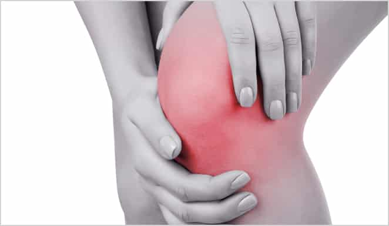
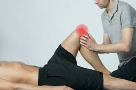

rotula
La rótula (o patela) es el hueso triangular situado en la parte frontal de la rodilla. Como mayor hueso sesamoideo del cuerpo, se aloja dentro del tendón del cuádriceps y actúa como un escudo protector y una polea fundamental para doblar y estirar la pierna.

Lesiones comunes de la rótula
Una lesión en la rótula de la rodilla afecta el hueso triangular frontal. Las más comunes son
- la fractura (rotura por impacto): Rotura del hueso por una caída directa o un golpe fuerte.
- la luxación (salida de su sitio): La rótula se desplaza (generalmente hacia afuera). Suele darse por movimientos bruscos, giros o impactos directos.
- el desgaste del cartílago (condromalacia): Desgaste o reblandecimiento del cartílago detrás de la rótula. Causa dolor al subir/bajar escaleras o tras estar mucho tiempo sentado.

Síntomas
Los síntomas de las lesiones en la rótula pueden incluir.
- Dolor intenso en la parte frontal de la rodilla
- Inflamación y, en ocasiones, derrame articular
- Sensación de que la rodilla "falla", se traba o se sale de su lugar.
- Imposibilidad de caminar o estirar la pierna por completo

tratamiento
Algunas fracturas rotulianas simples se pueden tratar usando un yeso o una férula hasta que el hueso sane.
- Inmovilización
- Fisioterapia
- Cirugía en fracturas severas
- Ejercicios de fortalecimiento